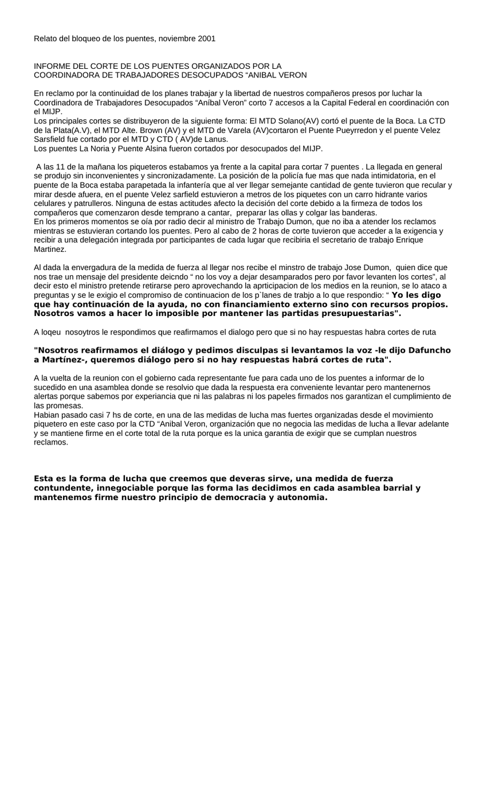

Primera hoja de relato bloqueo puentes noviembre 2001.doc. Clic en la imagen para abrir o descargar el archivo original.·23.0 KB·1 hoja

Relato del bloqueo de los puentes, noviembre 2001
En reclamo por la continuidad de los planes trabajar y la libertad de nuestros compañeros presos por luchar la Coordinadora de Trabajadores Desocupados “Aníbal Veron” corto 7 accesos a la Capital Federal en coordinación con el MIJP.
Los principales cortes se distribuyeron de la siguiente forma: El MTD Solano(AV) cortó el puente de la Boca. La CTD de la Plata(A.V), el MTD Alte. Brown (AV) y el MTD de Varela (AV)cortaron el Puente Pueyrredon y el puente Velez Sarsfield fue cortado por el MTD y CTD ( AV)de Lanus.
Los puentes La Noria y Puente Alsina fueron cortados por desocupados del MIJP.
A las 11 de la mañana los piqueteros estabamos ya frente a la capital para cortar 7 puentes . La llegada en general se produjo sin inconvenientes y sincronizadamente. La posición de la policía fue mas que nada intimidatoria, en el puente de la Boca estaba parapetada la infantería que al ver llegar semejante cantidad de gente tuvieron que recular y mirar desde afuera, en el puente Velez sarfield estuvieron a metros de los piquetes con un carro hidrante varios celulares y patrulleros. Ninguna de estas actitudes afecto la decisión del corte debido a la firmeza de todos los compañeros que comenzaron desde temprano a cantar, preparar las ollas y colgar las banderas.
En los primeros momentos se oía por radio decir al ministro de Trabajo Dumon, que no iba a atender los reclamos mientras se estuvieran cortando los puentes. Pero al cabo de 2 horas de corte tuvieron que acceder a la exigencia y recibir a una delegación integrada por participantes de cada lugar que recibiria el secretario de trabajo Enrique Martinez.
Al dada la envergadura de la medida de fuerza al llegar nos recibe el minstro de trabajo Jose Dumon, quien dice que nos trae un mensaje del presidente deicndo “ no los voy a dejar desamparados pero por favor levanten los cortes”, al decir esto el ministro pretende retirarse pero aprovechando la aprticipacion de los medios en la reunion, se lo ataco a preguntas y se le exigio el compromiso de continuacion de los p`lanes de trabjo a lo que respondio: “ Yo les digo que hay continuación de la ayuda, no con financiamiento externo sino con recursos propios. Nosotros vamos a hacer lo imposible por mantener las partidas presupuestarias".
A loqeu nosoytros le respondimos que reafirmamos el dialogo pero que si no hay respuestas habra cortes de ruta
"Nosotros reafirmamos el diálogo y pedimos disculpas si levantamos la voz -le dijo Dafuncho a Martínez-, queremos diálogo pero si no hay respuestas habrá cortes de ruta".
A la vuelta de la reunion con el gobierno cada representante fue para cada uno de los puentes a informar de lo sucedido en una asamblea donde se resolvio que dada la respuesta era conveniente levantar pero mantenernos alertas porque sabemos por experiancia que ni las palabras ni los papeles firmados nos garantizan el cumplimiento de las promesas.
Habian pasado casi 7 hs de corte, en una de las medidas de lucha mas fuertes organizadas desde el movimiento piquetero en este caso por la CTD “Anibal Veron, organización que no negocia las medidas de lucha a llevar adelante y se mantiene firme en el corte total de la ruta porque es la unica garantia de exigir que se cumplan nuestros reclamos.
Esta es la forma de lucha que creemos que deveras sirve, una medida de fuerza contundente, innegociable porque las forma las decidimos en cada asamblea barrial y mantenemos firme nuestro principio de democracia y autonomia.
Transcripción del documento original relato bloqueo puentes noviembre 2001.doc. Se conserva la ortografía del original.